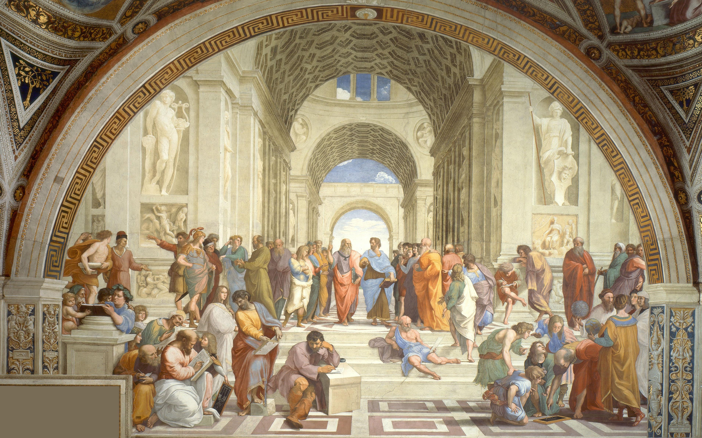

Nepenthe
All men by nature desire to know.
- Aristotle, Metaphisica

Introduction
I feel more confortable to build on something rather than create from blank. Maybe it means I by nature am not much creative. Lack of descipline might also be my essence. This directly results in my dreadful memory and distressing concentration. Creating this page is an attempt to save the worse condition. Building on the open source template, I can also learn more on css, jave script, and html at the same time.
Substance
Idealism
Agnosticism
Lazism
Substratum
Migraine
Moderate
Moderate
Scolioisis
Minor
Minor
Delusion
Severe
Severe
Amnesia
Potential
Potential
Source of Change
Time
Reading and Writing
“知止而后又定，定而后能静，静而后能安，安而后能虑，虑而后有得。物又本末，事有终始，知所先后，则近道矣。”
——《大学》
（不会说话之前就先摘录吧。）
Reading Notes


Contact Me
Fairfax, VA, US
Phone: +00 681602
Email: soleilfirmament@mail.com